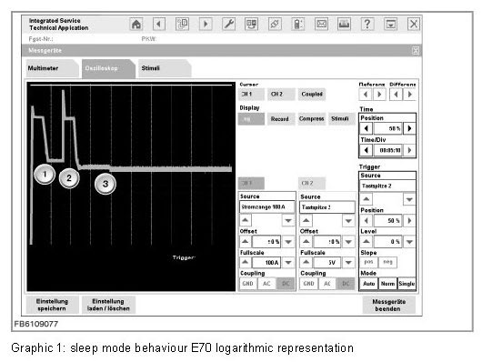
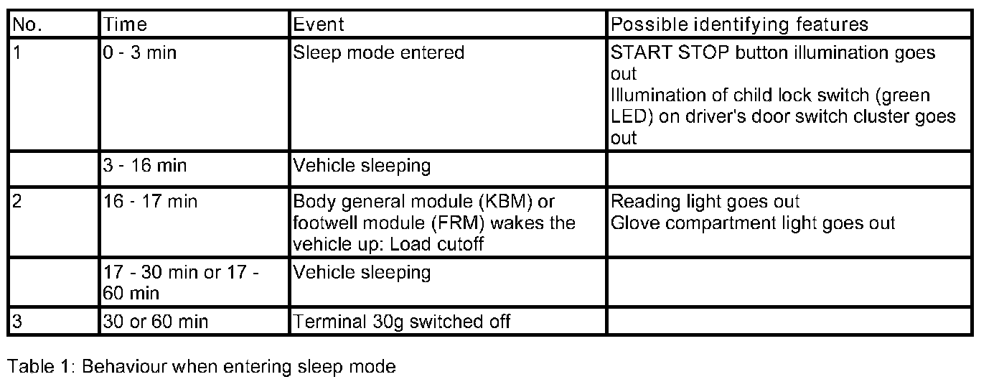
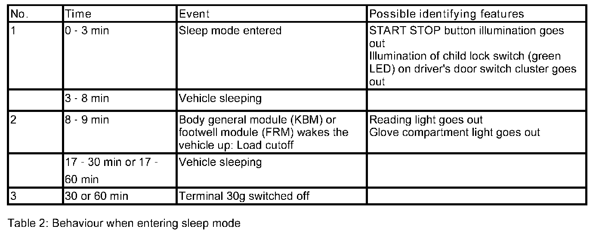
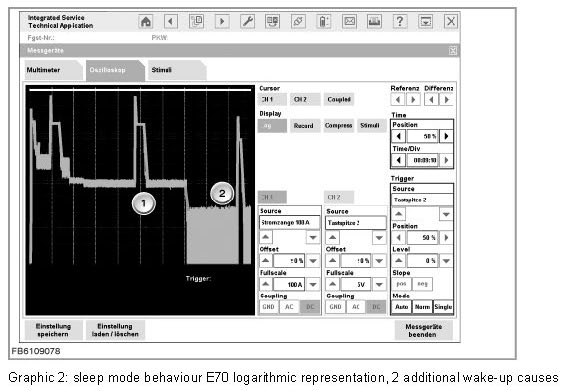
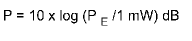
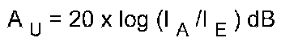
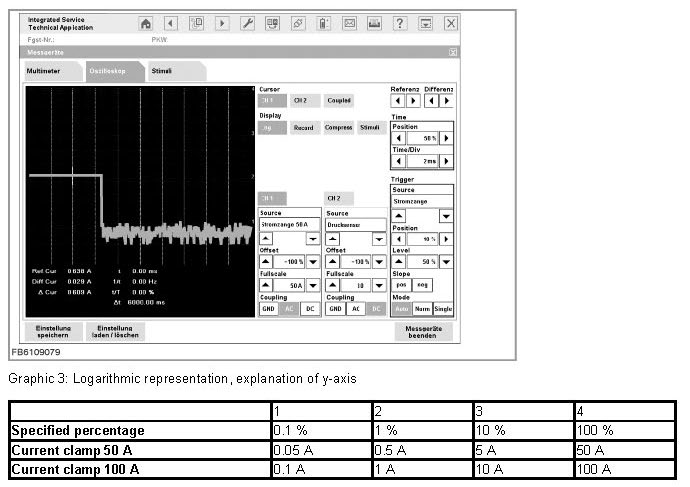

Closed-Circuit Current Measurement
Closed-Circuit Current Measurement
Closed-circuit current measurement
Sporadically or continuously, an increased closed-circuit current can occur in the parked vehicle. Possible causes for that may be:
- An additional current consumer is connected to terminal 30 or the battery.
- Defective components, control units or control unit peripherals using too much power in sleep mode and preventing the vehicle entering sleep mode
- Automatic detection of the cause is not possible in the case of a closed-circuit current fault. On vehicles with an intelligent battery sensor, only the range of the quiescent current can be determined:
- Quiescent current less than 80 mA
- Quiescent current between 80 and 200 mA
- Quiescent current between 200 mA and 1 A
- Quiescent current above 1 A
Conclusions can be drawn as to the component causing the fault based on the amount by which the quiescent current limit is exceeded.
Cables used
Current clamp, 100 A (50 A)
Testing instructions
- The current clamp must be calibrated before taking the measurement. The current clamp must not be connected to live leads until it has been calibrated.
NOTE: At present, calibration has to be repeated every time a setting is changed.
- The current clamp must be connected to the battery negative lead. The arrow on the current clamp must point towards the battery.
- Record mode: Select TIME/DIV: 500 ms/Div. This provides a maximum recording time of more than 24 hours. The shorter the recording interval is set, the more signal changes, e.g. interference spikes, are recorded. For recording over a 24-hour period, the setting 500 ms/Div is recommended.
- Quiescent current can also be measured in "Normal" mode (Record deactivated). However, the display can then only show readings in the indication range covering a period up to 33 minutes (200 s/Div).
NOTE: When current measurement is completed in Record mode, the current readings can only be displayed in the ampere range using the cursor at present.
- For all long-term measurements, the ISID and IMIB must be connected to the power supply (power pack).
At present, calibration has to be repeated every time a setting is changed.
Outlook
If quiescent current measurement is implemented as part of a testing procedure (ABL), it can run autonomously on the IMIB. The ISID now no longer has to be connected to the IMIB.
Quiescent current measurement procedure
Before quiescent current measurement, the vehicle must be prepared to ensure good results and avoid possible interference during measurement:
- Park the vehicle in a position where quiescent current measurement can be performed without disruption.
- The battery must be adequately charged and the battery charger must not be connected. If necessary, the battery must be charged beforehand.
- Open the engine bonnet and pull up the bonnet contact switch (simulation of closed engine bonnet).
- Open the boot lid/tailgate and use a screwdriver to lock the boot lid/tailgate lock with the boot lid/tailgate open (simulation of closed boot lid/tailgate).
- Open the glove compartment (detection of consumer shutdown).
- Open the driver's door and close it again (simulates somebody getting in).
- Switch on the ignition for at least 5 seconds and then switch it off again.
- Remove the remote control or identification sensor for vehicles with Comfort Access from the insert compartment and do not leave it in the vehicle.
- Open the driver's door again and use a screwdriver to lock the driver's door lock with the door open (simulation of unoccupied vehicle).
Test results for regular entry into sleep mode
The illustration below shows the current progression when a vehicle enters sleep mode.
Oscilloscope settings:
CH1: Current clamp 100 A, offset 0 %, full scale 100 A, coupling DC
Display: Log, Record
Cursor: CH1

Entry into sleep mode for vehicles before 03/2006 (E60, E61, E63, E64 E87, E90, E91)

Entering sleep mode on other vehicles:

After-running period of terminal 30 switched
In the standard scenario, Terminal 30g is switched off 30 min after Terminal R off. On vehicles with Telematic Control Unit (TCU) and telematics services or with auxiliary heater, it is switched off 60 min after Terminal R off. For E70 and E71 as of integration level 03/2009, it is switched off in the standard scenario 30 min after Terminal R is switched off and, on vehicles with auxiliary heaters (option SA 536), 45 min after Terminal R is switched off. On vehicles with intelligent battery sensor, quiescent current monitoring starts approx. 70 min after Terminal. R off. The vehicle must remain in sleep mode for at least another 120 minutes without being woken up so that a new quiescent current monitoring cycle is recorded by the DME/DDE.

The small readings can be better resolved by zooming the time window.
NOTE:
- In Record mode, the decimal places of the readings are rounded at present. This problem will be eliminated so that the current readings can be displayed to an accuracy of 10 mA.
- If the engine has not been run for a certain amount of time, 2 additional wake-ups can occur on E60, E61, E63, E64 and E70, E71 as of model year 03/2007: 40 min and 80 min after switching off the engine, the instrument cluster (KOMBI) wakes up the vehicle to query the coolant temperature (see graphic above). Both wake-up causes are normal and do not result in a fault memory entry.
- On R55, R56 and R57 the 2 additional wake-up causes due to the instrument cluster (KOMBI) may occur 40 min and 80 min after Terminal R is switched off.
Procedure for troubleshooting
In the event of a closed-circuit current fault, use the following procedure:
- To isolate the originator, take readings with the current clamp on the supply leads to the front and rear power distribution boxes and, if necessary, on the supply lead from the safety battery terminal. In that way it is possible to determine the area in which the originator is located.
- The initiator can be determined by unplugging fuses one after the other at the corresponding power distribution box. As Terminal 30g is switched off 30 min or 60 min after Terminal R off, troubleshooting must focus on the components supplied by Terminal 30 and Terminal 30g-f.
Explanation of logarithmic representation
Normally, the y-axis has a linear scale on the oscilloscope. One grid division always has the same value according to the selected setting (Unit/Div). However, as well as the linear representation, the y-axis can also be changed to a logarithmic scale. The advantage of the logarithmic representation is that signals of various orders of magnitude can be better displayed and so smaller signals in particular more easily recorded.
Formula
In order to be able to convert the power (reference variable 1 mW) into currents there must always be a reference to a defined terminal resistance.

For the variables of current and voltage, the following formula can be derived:

Example
In the logarithmic view, the indication range always goes from 0 A to the maximum current clamp reading (full scale). The y-axis can be explained with the aid of the screenshot and the table below. There are no changes to the time range (x-axis) compared with the linear view.

No liability can be accepted for printing or other errors. Subject to changes of a technical nature